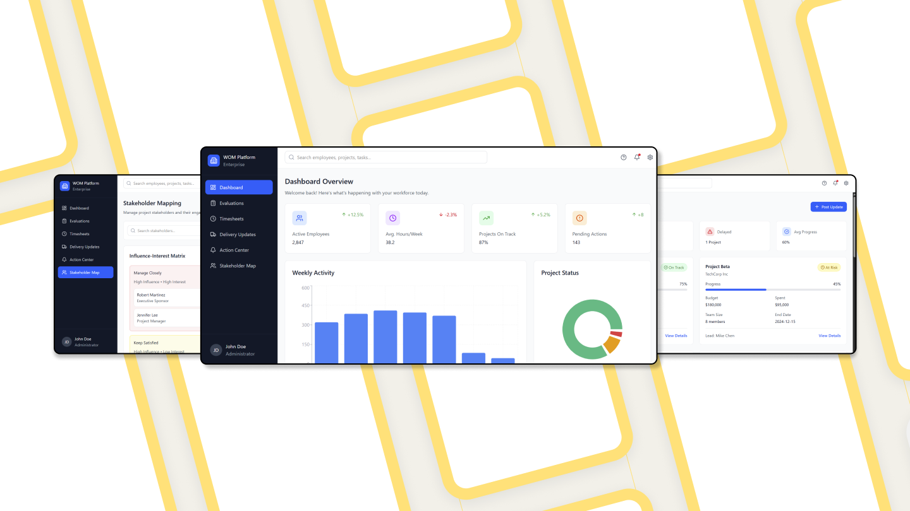

Core Expertise
End-to-End Product Design
Driving complex digital products from problem discovery to scalable, high-quality delivery.
User-Centered & Systems-Driven UX
Translating user needs and business goals into structured user flows, information architecture, and interaction models.
Visual & Interface Design Excellence
Crafting pixel-perfect, accessible, and brand-aligned interfaces for enterprise-scale products.
Design Systems & Consistency at Scale
Building, evolving, and applying component libraries and design standards across products and teams.
Selected
Case Studies
Selected case studies demonstrating end-to-end UX, visual design, and problem-solving across complex enterprise products.

Enterprise Operations Management Platform
Redesigned a data-heavy internal platform to simplify complex workflows and improve operational clarity at scale.

Enterprise E-Learning Platform
Role-based enterprise learning platform designed to reduce content overload and guide structured employee upskilling.
Design
for
Complexity
Systems Thinking
I don't just design screens; I design the rules and components that build them. Ensuring consistency across thousands of views.
Technical Feasibility
Working closely with engineering to ensure designs are performant and modular. I speak the language of code to bridge the gap.
Data-Driven Logic
Enterprise design is about utility. Every pixel serves a purpose based on user tasks and data hierarchy.
Ready to scale
your product?
I'm currently available for full-time senior roles in product-led organizations.